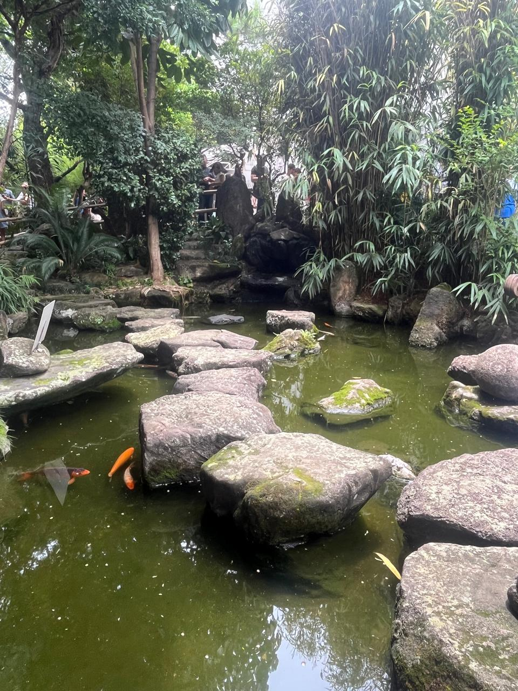

O Templo Busshinji(nome da edificação da comunidade budista soto zenshu), em São Paulo-SP-Liberdade, foi aberto em 1955, é o templo central da Escola Budista Soto Zen para a América do Sul. Está localizado na rua São Joaquim, 285 Liberdade, São Paulo SP. De tradição japonesa da vertente budista Mahayana, o templo Busshinji abriga a Comunidade Budista Sotozenshu da América do Sul.
O Jardim Oriental é um refúgio de tranquilidade em meio à agitação da área circundante. Este espaço é projetado em estilo oriental e abriga um lago com carpas.
